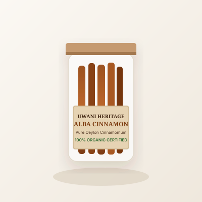

The Heart of UWANI
A living testament to Sri Lanka's 2,500-year-old agricultural legacy. We celebrate botanical purity, fair-trade village collectives, and conscious luxury.
Rooted in Indigenous Ceylon Agroforestry
For centuries before synthetic monoculture farming, Sri Lankan villagers cultivated diverse homegardens (known locally as Kandyan Forest Gardens). Under the natural shade of jackfruit, mahogany, and coconut palms, spices like cinnamon, cardamom, and black pepper flourished alongside wild beehives and medicinal botanicals.
UWANI was created to preserve and champion this bio-diverse heritage. By providing modern e-commerce access directly to rural smallholders, we ensure that indigenous cultivation techniques remain economically rewarding for future generations.
100%
Direct Trade Pricing
0 Chemicals
Regenerative Soil Care
5% Direct
Village Artisan Fund

Alba Cinnamon Harvest
Mirissa Coastal Agroforestry Collective, Southern Province
The Four Pillars of UWANI
How we align with the United Nations Sustainable Development Goals and NSBM Green University’s environmental vision.
Regenerative Soil
Zero chemical fertilizers, no synthetic pesticides, and biological pest management via companion planting and multi-tier shading canopy.
Fair Living Wages
Our growers earn 35% higher revenue than traditional auction middlemen, fostering stability and children education in tea & spice regions.
Artisan Pottery
Reviving Sri Lanka's traditional wheel-thrown terracotta and palm weave traditions with functional, durable contemporary lifestyle products.
Circular Packaging
All product containers are crafted from reusable tin, glass, or biodegradable unglazed terracotta clay, eliminating plastic waste.
Meet Our Artisan Partners
The skilled hands, watchful eyes, and generational wisdom behind every harvest.
Experience the Essence of Ceylon
Support ethical Sri Lankan agriculture. Every order directly funds smallholder growers and village artisan livelihoods.
Browse Full Catalog